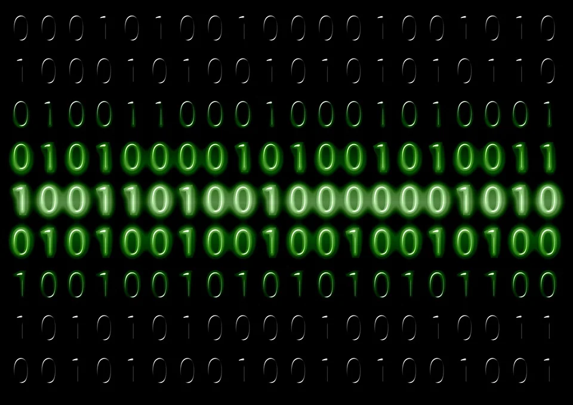

uitleg over het binair stelsel
Het binair stelsel bestaat uit alleen maar de getallen 0 en 1 ook wel bits genoemt. Ook zijn de getallen tweedelig. Als je de bits in bepaalde volordes zet dan krijg je getallen.
Deze codes worden vooral bij computers gebruikt. Meestal word dan 1 getal gemaakt door 8 bits achter elkaar te zetten. Dit heet ook wel een byte.
Je hebt ook 1000 bytes wat ook wel 1 KB (kilobyte) word genoemt, dus een halve pagina met tekst op een computer.
Je hebt ook 1.000.000 bytes wat ook wel 1 MB (megabite) word genoemt, dit kan je ook vergelijken met 1 minuutvan hetzelfde mp3-liedje op een computer.
home
